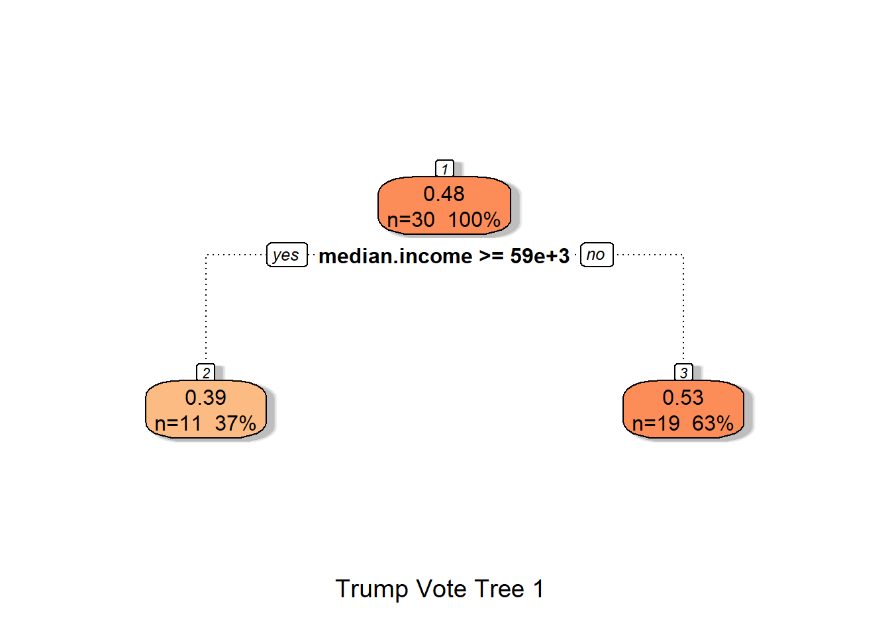
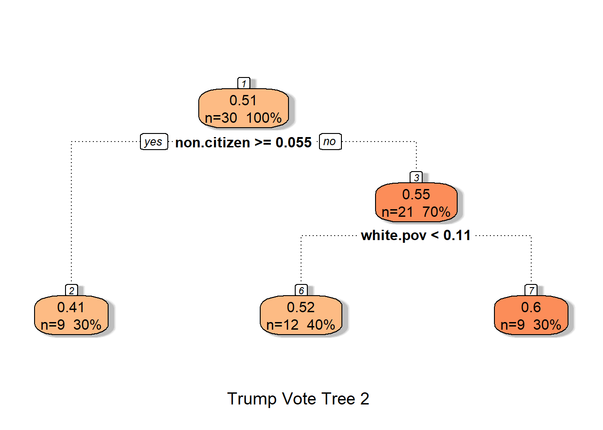

Last class, we discussed the “R” part of CART. Today its time for the “C”. Classification is a much more natural task to perform with trees because the leaves naturally partition the sample into disjoint groups. If our response is categorical, we can then assign a predicted class to each leaf. Before we get into the specifics, let’s start again with an example.
To set things up, we’re going to use the women’s shots water polo data set from Module 3. We’ll use the following predictors of Goal: Tactic, Type, Hand, Defense, Distance, and Angle. The only modification we need to make in our use of rpart() is to add the method = "class" argument.
All the language of splits, nodes, etc is the same as before as is the interpretation of how to interpret the splitting criteria. The major difference now is in interpreting the information inside each node.
At the top of each node is a primary class prediction based on the majority rule. For example, the root node says “Not Goal” because 63% of all shots in the dataset were classified as “Not Goal”.
The two numbers below the class designation of a node are the predicted probabilities fo Goal and Not Goal. For example, in the leftmost leaf, these numbers are .77 and .23 because 77% of all shots taken under the conditions of that leaf were goals.
The bottom number is the overall fraction of observations in that node. For example, the leftmost leaf contained only 6% of all shots.
Now for some more advanced details.
I want to be stereotyped, I want to be classified
The idea behind classification trees is similar to regression in that we look for “optimal” splits of the predictor variables. The difference is in terms of what we mean by “optimal”. For regression, we want to minimize SSE so at each stage so we choose a split which gives us the largest reduction in relative error. What is the analog for classification?
Previously, we discussed the notion of error rate for classification algorithms as the fraction of incorrectly classified outcomes. This is the most natural measure to report for the final tree. We can get it by first using the predict function with the “class” option to obtain the predicted outcomes for all shots (the \(\hat{y}\)):
Note that the error rate is 1-accuracy or approximately 0.33. Note also that this error rate is similar to what we got applying the logistic model to this scenario. To remind you of those codes:
If we are trying to choose a quantity to minimize in a classification algorithm, then the error (sometimes called missclassification) rate is a natural metric to consider. Unfortunately, it isn’t sensitive enough to detect differences between splits. In other words, there will often be too many splits with the same accuracy and the tree won’t be able to distinguish between them. Instead, there are two other typical measures of “node impurity” that classification trees use to decide on splits: the Gini Index and the Entropy or Information Index.
To explain these metrics, let’s first think about what an ideal node should look like in a binary response problem. We would like the node to contain mostly homogeneous observations, meaning observations from the same class. Therefore, if we let \(p\) be the fraction of observations in the node which would belong to Class 1, the ideal situations would be either \(p=0\) (all observations belong to Class 2) or \(p=1\) (all observations belong to Class 1). The worst case scenario is \(p=1/2\) and scenarios between 0 and 1/2 or 1/2 and 1 should be symmetric in their badness. Putting these observations together, we would like to choose an impurity measure \(f(p)\) which has the following attributes
Symmetric about \(p=1/2\).
Max at \(p=1/2\)
Min at \(p=0\) and \(p=1\).
Additionally, we might as well choose \(f\) so that \(f\) is non-negative with \(f(0)=f(1)=0\). There are two common choices of \(f\) which meet these criteria
Other than having a slightly different scale on the \(y\)-axis, they are essentially equivalent measures. In fact, according to the rpart manual: “For the two class problem the measures (Gini and Entropy) differ only slightly, and will nearly always choose the same split point.”
Entropy has some deep roots in the fields of probability, statistics, and information theory, but Gini has a more natural intuition as demonstrated by the following problem. Suppose we have an urn containing 1 red and 3 blue balls. We reach in and draw one ball at random, recording its color before replacing it in the urn. Our friend then comes along and draws another ball from the urn. What is the probability that we draw balls of different colors?
A little thought gives the answer \[
(1/4)(3/4) + (3/4)(1/4).
\] If you replace the \(1/4\) with \(p\), then this is exactly the Gini Index. In other words, the Gini Index is the probability that two randomly selected observations in a node come from different classes. The higher the probability, the less desirable the node.
To summarize, when deciding on a split, we look at either the Gini index or Entropy of the resulting node and choose the split which minimizes the chosen impurity metric. Let’s compute each for a simple numeric example.
Suppose at some point in our calculation, we have 50 observations left, 30 of which belong to Class 1 and 20 which belong to Class 2. You are deciding between two splits
Split 1: The left node has a total of 30 observations, 20 from Class 1 and 10 from Class 2.
Split 2: The left node has a total of 15 observations, 10 from Class 1 and 5 from Class 2.
The weighted average of Gini Indices for the two nodes in Split 1 is
(30/50)*2*(20/30)*10/30+(20/50)*2*(10/20)^2
[1] 0.4666667
while the Gini Index for Split 2 is
(15/50)*2*(10/15)*5/15+(35/50)*2*(20/35)*(15/35)
[1] 0.4761905
So Gini prefers Split 1 (lower is better).
The weighted average of the entropies for each node in Split 1 is
So Entropy also has a slight preference for Split 1. Hurrah for consistency!
Note that if we have \(K> 2\) classes and let \(p_i\) be the proportion of observations in the node from class \(i\). Then by the “balls in the urn”” analogy the Gini Index becomes \[
\sum_{i=1}^K \sum_{j \neq i} p_i p_j
\] and entropy becomes \[
-\sum_{i=1}^K p_i \log p_i.
\] If \(K=2\), then \(p_1 = p\), \(p_2=1-p\) so both these simplify to the previous functions.
A note on Pruning
Pruning can also be performed using complexity parameters although the meaning of this number is slightly different for classification trees. To begin, let’s take a look at the cp table from the output of rpart:
The output shows three different subtrees that we could get with 0, 2, and 3 splits. Let’s call the 0 split tree \(T_0\), the second one with 2 splits \(T_2\) and the third and final one \(T_3\).
Notice that the cross-validated error for \(T_2\) is similar to \(T_3\) so let’s try pruning at Cp=0.04 and looking at this tree
And voila, that is the relative error in the cptable output. But notice that cp is NOT just the difference of this from the previous error rate. That is because we went from 0 to 2 splits so the cp at the first step. In general, rpart computes cp for classification algorithms as \[
cp=(\Delta\; rel.error)/(n_{splits})
\]
So for the first entry, its the change in relative error divided by 2.
Comparing Regression and Classification Trees: Summary and Issues
To summarize the main ideas of the last two sections:
Both regression and classification trees try to split the data based on predictors. The goal is to create nodes as similar as possible (in terms of our response variable)
Regression uses SSE while Classification uses Impurity Measures to determine optimal splits.
Relative error in regression trees is \(1-R^2\) while in classification its the error rate for the new split/null error.
Cp is the change in relative error divided by the number of splits.
Decision Trees are one of the most visually appealing and easy to interpret models in statistical learning, but they can perform poorly in predictive scenarios because they tend to suffer from high-variance. To demonstrate, let’s reload the election data and perform a 60-40 split, fitting a tree to the training set
set.seed(1205)df_url="https://raw.githubusercontent.com/jmayberr/math133-stat-learning-fall2026/refs/heads/main/Datasets/election2016.csv"election2016=read.csv(df_url)s=sample(50,30)train=election2016[s,]test=election2016[-s,]trump_tree=rpart(trump.vote~.,data=train[,2:10])fancyRpartPlot(trump_tree,palettes="OrRd",sub="Trump Vote Tree 1")

Now let’s repeat with a different training set
set.seed(1206)s=sample(50,30)train=election2016[s,]test=election2016[-s,]trump_tree=rpart(trump.vote~.,data=train[,2:10])fancyRpartPlot(trump_tree,palettes="OrRd",sub="Trump Vote Tree 2")

That is a very different tree! In the next section, we’ll learn some sampling techniques for reducing the variance by sampling a large number of trees and averaging the results.
Practice
The palmerpenguins package contains a famous dataset on adult penguins covering three species found on three islands in the Palmer Archipelago, Antarctica. Load this package into R and work with the penguins dataset to answer the questions below.
Perform a 70-30 training split on the Penguins dataset using set.seed(55) for consistency. Fit a classification tree to the training set using species as the response and all other variables as features. Plot the resulting tree
What characteristics would predict each of the three species (Adelie, Chinstrap, Gentoo)?
Calculate the predicted species of the observations in your test set. What is the model accuracy?